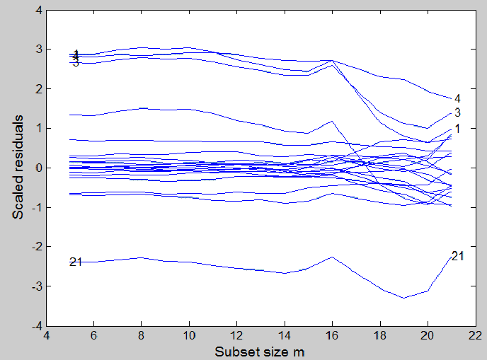
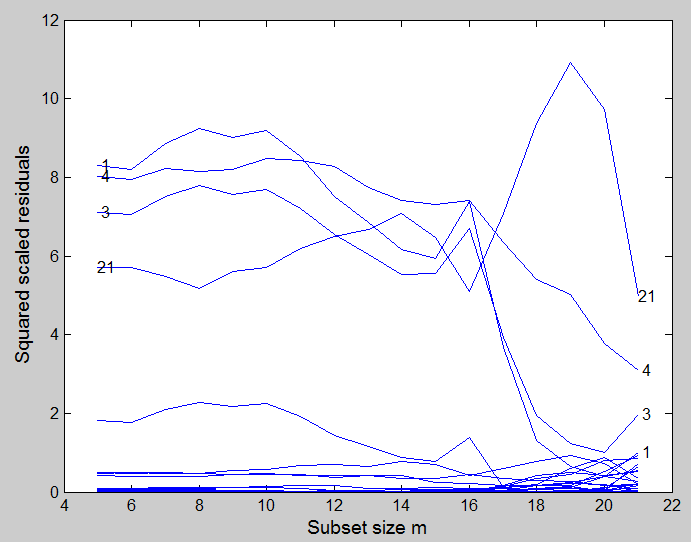
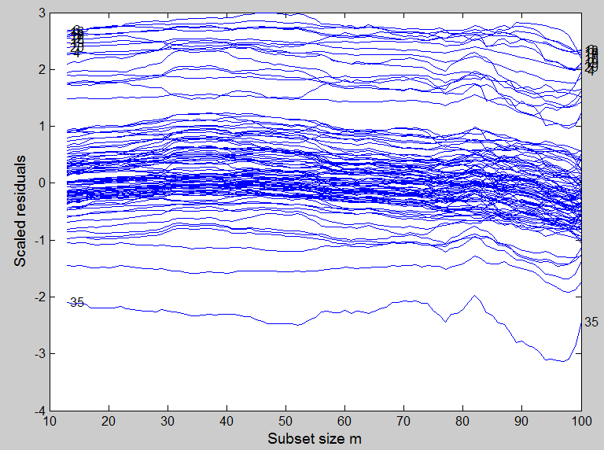
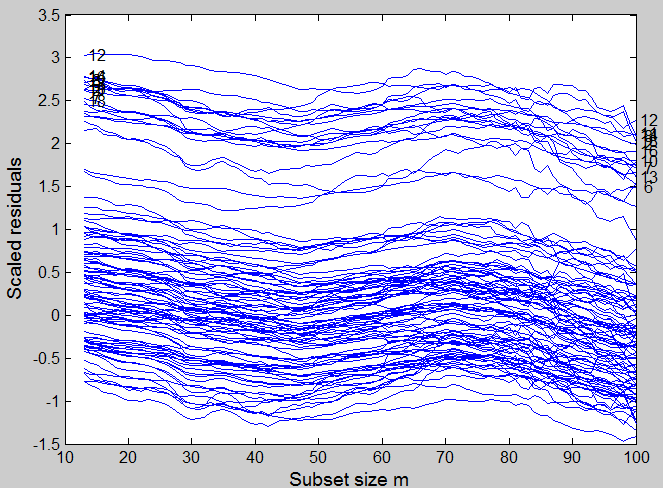

| Flexible Statistics Data Analysis Toolbox™ |
|
Plots the (scaled) residuals for all units in each step of the forward search.
resfwdplot(out)
resfwdplot(out,param1,val1,param2,val2,...)
plotopt=resfwdplot(out,'msg',1,param1,val1,param2,val2,...)
resfwdplot(out) plots the trajectories of scaled residuals in each step of the forward search. The input argument of this function may be conveniently produced by function FSReda. It is worthwhile to remark the difference between function resfwdplot which shows a 'movie' of the residuals, i.e. it enables to show how the residuals for each unit evolve as the subset size increases from function resindexplot which shows the static plot of residuals against index number or fitted value or against any other statistic.
The trajectories of the residuals are divided into 3 parts. Those which have to be highlighted (they are called trajectories in foreground), those which have to be displayed in faint color or hidden (they are called background trajectories) or the remaining ones (they are called standard trajectories).
plotopt=resfwdplot(out,'msg',1) enables to save inside cell plotopt the options which have been used to draw the three types of trajectories (standard, foreground and background). Notice that if msg=2 the options are not only saved, but also printed on the screen.
resfwdplot(out) needs as input the following information
RES - A matrix containing the residuals monitored in each step of the forward search. Every row is associated with a unit. This matrix can be created using function FSReda (compulsory argument)
resfwdplot(out,param1,val1,param2,val2,...) specifies one or more of the name/value pairs described in the following table.
| Parameter | Value | ||||||||||||||||||||||
|---|---|---|---|---|---|---|---|---|---|---|---|---|---|---|---|---|---|---|---|---|---|---|---|
| 'standard' |
Structure which defines the appearance of the plot in terms of xlim, ylim, axes labels and their font size style, color of the lines, etc. The structure contains the following fields:
standard.SizeAxesNum=1 standard.SizeAxesNum=10 standard.SizeAxesLab=12 standard.xlim='' (Automatic scale) standard.ylim='' (Automatic scale) standard.titl='' (empty title) standard.labx='Subset size m' standard.laby='Scaled residuals' standard.LineWidth=1 standard.Color={'b'} standard.LineStyle={'-'} |
||||||||||||||||||||||
| 'fground' |
Structure which defines the trajectories in foreground, that is which trajectories are highlighted and how they are plot to be distinguishable from the others. It is possible to control the label, the width, the color, the line type and the marker of the highlighted units. Structure fground contains the following fields:
fground.flabstep=[m0 n] fground.ftresh=2.5 fground.LineWidth=1 fground.LineStyle={'-'} fground.fmark=0 fground.FontSize=12 Remark: if fground='' no unit is highlighted and no label is inserted into the plot. |
||||||||||||||||||||||
| 'bground' |
structure which specifies the trajectories in background, i.e. the trajectories corresponding to "unimmportant" units in the central part of the data. The structure also specifies the style used in the plot to give them less emphasis, so that to not distract the eye of the analyst from the trajectories of the relevant units. The structure contains the following fields:
bground.bthresh=2.5 bground.bstyle='faint' (if n>100) bground.bthresh=-inf (if n<=100) Remark: bground='' is equivalent to bground.thresh=-Inf that is all trajectories are considered relevant. |
||||||||||||||||||||||
| 'tag' |
String which identifies the handle of the plot which is about to be created. The default is to use tag 'pl_resfwd'. Notice that if the program finds a plot which has a tag equal to the one specified by the user, then the output of the new plot overwrites the existing one in the same window else a new window is created |
||||||||||||||||||||||
| 'datatooltip' |
Empty value, scalar or structure. If it is an empty value is inactive. The default is
datatooltip = 1, i.e. the user can select with the
mouse an individual residual trajectory in order to
have information about the corresponding unit, the
associated label and the step of the search in which
the unit enters in the subset.
|
||||||||||||||||||||||
| 'databrush' |
Empty value scalar or structure. If databrush ='' (default) brushing is not enabled else if it is a scalar it is possible to brush trajectories with the mouse using all default options. The core of this option is selectdataFS, a function used by all graphic tools of the FSDA toolbox. A separate common page details all options of structure databrush. |
||||||||||||||||||||||
| 'label' | Cell containing the labels of the units (optional argument used when datatooltip=1. If this field is not present labels row1, ..., rown will be automatically created and included in the pop up datatooltip window) | ||||||||||||||||||||||
| 'nameX' |
cell array of strings of length p containing the labels of the variables of the regression dataset. If it is empty (default) the sequence X1, ..., Xp w will be created automatically.. |
||||||||||||||||||||||
| 'namey' | character containing the label of the response. | ||||||||||||||||||||||
| 'msg' | scalar which controls whether
to display or to save the options inside structures standard, fground and bground which have been used to draw the plot.
plotopt=resfwdplot(out,'msg',1) enables to save inside cell plotopt the options which have been used to draw the three types of trajectories (standard, foreground and background) plotopt=resfwdplot(out,'msg',2) saves inside cell plotopt the options which have been used and prints them on the screen, else (default) nothing is saved or printed on the screen |
In the first example we show the monitoring residuals plot for the famous stack loss data. We first plot the monitoring of residuals with sign and later the squared residuals.
load('stack_loss.txt');
y=stack_loss(:,4);
X=stack_loss(:,1:3);
[out]=LXS(y,X,'nsamp',10000);
[out1]=FSReda(y,X,out.bs,'init',5);
% Plot of monitoring of residuals
resfwdplot(out1)
% Create scaled squared residuals
out1.RES=out1.RES.^2;
resfwdplot(out1)


In the second example we use the same set of simulated data which had been already used in page LXS in order to compare the information content of the monitoring residuals plot with that of the index plot of robust residuals.
state=100;
randn('state', state);
n=100;
X=randn(n,3);
bet=[3;4;5];
y=3*randn(n,1)+X*bet;
y(1:20)=y(1:20)+13;
% LMS using 10000 subsamples
[outLXS]=LXS(y,X,'nsamp',10000);
% Forward Search with EDA purposes
[out]=FSReda(y,X,outLXS.bs);
% Monitoring of scaled residuals
resfwdplot(out);

If as we have done in page LXS, we change the seed to 543 and rerun the code this is the new monitoring residuals plot that we get
|
|
rescale.html | resindexplot.html |
|